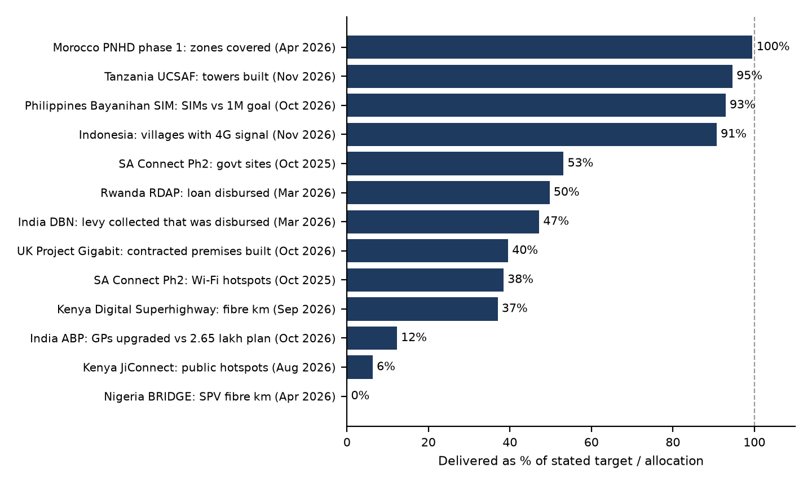

Affordable Internet and Digital Connectivity Programmes of National ICT Ministries: Who Runs Them, What They Fund, and How They Are Performing
56 ministries and regulators across Africa, Asia-Pacific, the Middle East, Latin America and the Caribbean, Europe and North America | universal service funds, rural broadband, school connectivity, affordability subsidies, public Wi-Fi, backbones and satellite | Status as of November 13, 2026
Prepared for Paul. Citations in square brackets are clickable and map to the numbered References. Ministry websites in Section 1 are linked directly. Performance labels: ON TRACK · MIXED · LAGGING / STALLED · NO PUBLIC DATA · Items marked [UNVERIFIED] rely only on press or ministerial remarks with no official dataset found. Where a source is press, the reference says so. Figures are in local currency as published; no conversions are made unless the source gives them.
Executive summary
- The gap is now mostly usage and affordability, not coverage. ITU’s Facts and Figures 2026 puts 6.3 billion people (76%) online and 2 billion offline; Internet use is 93% in high-income countries but 32% in low-income ones [1]. 3G-or-better coverage reaches 97% of people, leaving about 282 million uncovered, just over half of them in Africa [3]. GSMA counts 3.1 billion people (38%) who live under mobile broadband but do not use it, against a 3% coverage gap. An entry-level Internet handset costs 44% of monthly income for the poorest 20% in low- and middle-income countries [7].
- Prices are falling, but the poorest countries still miss the target. The median data-only mobile basket fell to 1.2% of GNI per capita in 2026 and the fixed basket to 2.3%. 138 of 202 economies meet the 2% target for mobile and 91 of 192 for fixed. Only 63 low- and middle-income economies, about half, meet it [2]. In LDCs the median mobile basket is still 6.1% of GNI per capita [1]. A4AI notes that no low-income country has ever met its “1 for 2” target, and it now argues for 5 GB at 2% of income [6].
- What is working: large, clearly scoped build programmes with long operating contracts. Morocco’s PNHD phase 1 covered 10,690 of 10,740 zones [69]. Tanzania’s UCSAF has built 2,199 of 2,324 towers [62]. Colombia installed all 14,057 Centros Digitales and extended operation to 2029–2031 [79]. Indonesia’s SATRIA-1 serves 31,803 public sites [26]. Canada reached 97.4% 50/10 Mbps coverage against its 98% target for 2026 [98].
- What is lagging: state-run fibre and hotspot targets. India has upgraded 32,512 gram panchayats under the Amended BharatNet Programme (Oct 31, 2026) [16], and Parliament’s committee found only 30% of GPs had a functional BharatNet connection in February 2026 [19]. Kenya has laid 37,000 of 100,000 km of fibre ahead of a 2027 deadline [55] and 1,578 of 25,000 hotspots [56]. SA Connect Phase 2 had installed 12,317 of 32,055 hotspots by October 2025 [59]. Nigeria’s 90,000 km BRIDGE fibre had laid 0 km at the April 2026 World Bank review [53].
- Idle universal service money is the most common failure mode. India’s Digital Bharat Nidhi has collected ₹2,01,690.52 crore since 2002–03 but disbursed only ₹95,138 crore (47%), leaving ₹1,06,552.50 crore in the Consolidated Fund [17]. GSMA found $265 million unused at 12 African USF authorities, more than half of five years’ collections [9]. Pakistan’s Rs57.2bn USF balance was moved to the Finance Division in 2014, stalling new projects for about 2.5 years [43]. Argentina’s FSU exceeds ARS 370,000 million [86].
- Affordability subsidies stop when the budget stops. Mexico’s free-SIM Conectividad para el Bienestar reached 3,028,665 people and then ended for lack of budget (Sep 2026) [78]. The US ACP ended in 2024 with 23,269,550 households enrolled [97]. Lifeline reaches about 8.2 million of 37.6 million eligible households (~22%) [96]. The Philippines’ Bayanihan SIM (929,259 SIMs) needs new funding to continue [31].
- Satellite is moving from pilot to mainstream USF tool. US BEAD plans put 21.9% of 3.79 million locations on satellite [94], with about $1 billion of awards to SpaceX and Amazon Leo [95]. Argentina’s ENACOM accepted a USD 9.978 million Starlink donation for 6,000 rural schools charged to the FSU [84]. Paraguay is deploying 1,600 Starlink kits [87], Fiji’s USS is using Starlink community Wi-Fi [47], and Vietnam licensed Starlink in February 2026 [41]. Australia’s UOMO law makes direct-to-device satellite part of a universal obligation [48], and Bangladesh has South Asia’s first Starlink direct-to-cell service [45].
- Licensing remains the gating factor in large Asian markets. India’s satcom spectrum terms await final approvals and security clearance [21,22]. Pakistan requires a local gateway within 18 months and lawful-interception capability before launch [44]. Indonesia is planning SATRIA-2 as a national strategic project, which signals continued state GEO capacity alongside LEO [27].
1. Who runs connectivity policy: ministries, regulators and universal service funds
The table covers 56 countries and the EU. Each ministry link was requested with curl (redirects followed) on Nov 13, 2026. Several African, Middle Eastern and Asian government sites reset the connection or time out for requests from this US-based server, and the Philippines DICT and Thailand MDES sites return bot checks. These are official domains, flagged in the last column, and should open in a normal browser. Ministers are named only where a 2026 source in this report names them. “—” means no universal service fund or equivalent was identified.
1.1 Africa
Country | Ministry / lead body | Regulator | USF / implementing agency | Link | curl check |
|---|---|---|---|---|---|
Nigeria | Federal Ministry of Communications, Innovation and Digital Economy (FMCIDE). Minister Bosun Tijani [54] | Nigerian Communications Commission (NCC) | Universal Service Provision Fund (USPF, under NCC) | 200 | |
Kenya | Ministry of Information, Communications and the Digital Economy (MICDE). CS William Kabogo [55] | Communications Authority of Kenya (CA) | Universal Service Fund (CA); ICT Authority builds NOFBI/Wi-Fi | TLS certificate error to curl; page loads | |
South Africa | Department of Communications and Digital Technologies (DCDT) | ICASA | Universal Service and Access Fund (USAF/USAASA); Broadband Infraco and Sentech deliver SA Connect [59] | No response to automated check (TLS reset/timeout); open in browser | |
Ghana | Ministry of Communication, Digital Technology and Innovations (MoCDTI). Minister Samuel Nartey George [65] | National Communications Authority (NCA) | Ghana Investment Fund for Electronic Communications (GIFEC) | No response to automated check (TLS reset/timeout); open in browser | |
Rwanda | Ministry of ICT and Innovation (MINICT) | Rwanda Utilities Regulatory Authority (RURA) | RISA implements the World Bank/AIIB RDAP [64] | 200 | |
Ethiopia | Ministry of Innovation and Technology (MInT) | Ethiopian Communications Authority (ECA) | No operating USF identified | No response to automated check (TLS reset/timeout); open in browser | |
Tanzania | Ministry of Communication and Information Technology (Wizara ya Mawasiliano na Teknolojia ya Habari). Minister Angellah Kairuki [63] | TCRA | Universal Communications Service Access Fund (UCSAF) | 200 | |
Uganda | Ministry of ICT and National Guidance (MoICT&NG) | Uganda Communications Commission (UCC) | 200 (JS check page) | ||
Egypt | Ministry of Communications and Information Technology (MCIT) | National Telecom Regulatory Authority (NTRA) | Decent Life (Hayah Karima) connectivity run by MCIT [68] | 200 | |
Morocco | Ministry Delegate for Digital Transition and Administrative Reform; site now titled “Ministry of Artificial Intelligence, Digital Transition and Administrative Reform”. Minister Delegate Amal El Fallah Seghrouchni [69] | ANRT | Universal service fund (ANRT); PNHD broadband plan | 200 | |
Senegal | Ministère de la Communication, des Télécommunications et du Numérique | ARTP | FDSUT (universal service fund) | No response to automated check (TLS reset/timeout); open in browser | |
Côte d’Ivoire | Ministère de la Transition Numérique et de l’Innovation Technologique (per official site) | ARTCI | ANSUT (Agence Nationale du Service Universel des Télécommunications) | 200 | |
Cameroon | Ministry of Posts and Telecommunications (MINPOSTEL) | Telecommunications Regulatory Board (ART) | USF fees collected by ART, held at the central bank; ministry authorises disbursement [9] | 200 | |
Zambia | Ministry of Technology and Science (MoTS) | ZICTA | Universal access programme run by ZICTA | TLS certificate error to curl; page loads | |
Zimbabwe | Ministry of ICT, Postal and Courier Services | POTRAZ | Universal Services Fund (POTRAZ) | No response to automated check (TLS reset/timeout); open in browser | |
Namibia | Ministry of Information and Communication Technology (MICT) | CRAN | Universal service fund (CRAN) | TLS certificate error to curl; page loads | |
DR Congo | Ministère des Postes, Télécommunications et Numérique (PTN) | ARPTC | FDSU (universal service development fund) | No response to automated check (TLS reset/timeout); open in browser |
1.2 Asia-Pacific
Country | Ministry / lead body | Regulator | USF / implementing agency | Link | curl check |
|---|---|---|---|---|---|
India | Ministry of Communications – Department of Telecommunications (DoT); MeitY for digital services. MoS Pemmasani Chandra Sekhar [18] | TRAI | Digital Bharat Nidhi (DBN, formerly USOF) | 200 | |
Indonesia | Ministry of Communication and Digital Affairs (Komdigi; Kementerian Komunikasi dan Digital) | Komdigi directorates-general | BAKTI (Badan Aksesibilitas Telekomunikasi dan Informasi), manages USO funds | 200 | |
Philippines | Department of Information and Communications Technology (DICT). Secretary Henry Rhoel Aguda [29] | National Telecommunications Commission (NTC) | No USF; DICT budget programmes (Free Wi-Fi for All, Bayanihan SIM) | 403 (bot check); opens in browser | |
Malaysia | Ministry of Communications (KKOMM); Ministry of Digital covers the digital economy. Minister Fahmi Fadzil [35] | MCMC | Universal Service Provision (USP) fund, MCMC | No response to automated check (TLS reset/timeout); open in browser | |
Thailand | Ministry of Digital Economy and Society (MDES) | NBTC | USO fund (NBTC) | 403 (bot check); opens in browser | |
Vietnam | Ministry of Science and Technology (MST; Bộ Khoa học và Công nghệ), which now holds the telecoms portfolio [40] | Telecommunications Authority (Cục Viễn thông, MST) | Vietnam Public Utility Telecommunication Service Fund (VTF) | 200 | |
Pakistan | Ministry of IT and Telecommunication (MoITT). Minister Shaza Fatima Khawaja [42] | Pakistan Telecommunication Authority (PTA) | Universal Service Fund (USF) | TLS certificate error to curl; page loads | |
Bangladesh | Ministry of Posts, Telecommunications and ICT – Posts and Telecommunications Division (ICT Division separate) | BTRC | Social Obligation Fund (SOF) | 200 | |
Sri Lanka | Ministry of Digital Economy | TRCSL | — | 200 | |
Nepal | Ministry of Communication and Information Technology (official site title: “Ministry of Information and Communication”) | Nepal Telecommunications Authority (NTA) | Rural Telecommunications Development Fund (NTA) | 200 | |
Cambodia | Ministry of Posts and Telecommunications (MPTC) | Telecommunication Regulator of Cambodia (TRC) | — | 200 | |
Australia | Department of Infrastructure, Transport, Regional Development, Communications, Sport and the Arts | ACMA | Telecommunications Industry Levy (funds USO); nbn co; UOMO [48] | 200 | |
New Zealand | Ministry of Business, Innovation and Employment (MBIE) – communications policy | Commerce Commission | Telecommunications Development Levy | 200 | |
Fiji | Ministry of Policing and Communications | Telecommunications Authority of Fiji (TAF) | Universal Service Scheme (USS) [47] | 200 | |
Papua New Guinea | Department of Information and Communications Technology (DICT) | NICTA (CEO Lume Polume) [46] | Universal Access and Service (UAS) Fund | 200 | |
Japan | Ministry of Internal Affairs and Communications (MIC) | MIC (ministerial regulator) | Universal service subsidy system (fixed telephony; broadband added by a 2022 law amendment) | 200 |
1.3 Middle East
Country | Ministry / lead body | Regulator | USF / implementing agency | Link | curl check |
|---|---|---|---|---|---|
Saudi Arabia | Ministry of Communications and Information Technology (MCIT) | Communications, Space and Technology Commission (CST) | Universal Service Fund (CST) [71] | 200 | |
United Arab Emirates | No stand-alone ICT ministry; TDRA leads digital inclusion [73] | Telecommunications and Digital Government Regulatory Authority (TDRA) | — | 200 | |
Jordan | Ministry of Digital Economy and Entrepreneurship (MoDEE) | Telecommunications Regulatory Commission (TRC) | — | No response to automated check (TLS reset/timeout); open in browser | |
Oman | Ministry of Transport, Communications and Information Technology (MTCIT) | Telecommunications Regulatory Authority (TRA) | — | 200 | |
Türkiye | Ministry of Transport and Infrastructure (Ulaştırma ve Altyapı Bakanlığı) | BTK | Universal service revenues (ministry) | 200 |
1.4 Latin America & Caribbean
Country | Ministry / lead body | Regulator | USF / implementing agency | Link | curl check |
|---|---|---|---|---|---|
Brazil | Ministério das Comunicações (MCom) | Anatel | FUST; Norte Conectado run via EAF from 5G-auction obligations [74] | 200 | |
Mexico | Agencia de Transformación Digital y Telecomunicaciones (ATDT) | Comisión Reguladora de Telecomunicaciones (CRT) | 200 | ||
Colombia | Ministerio de Tecnologías de la Información y las Comunicaciones (MinTIC) | CRC (with ANE for spectrum) | FUTIC (Fondo Único de TIC) | 500 on home page; MinTIC microsites load (200) | |
Peru | Ministerio de Transportes y Comunicaciones (MTC) | OSIPTEL | PRONATEL (Programa Nacional de Telecomunicaciones) | 200 | |
Chile | Ministerio de Transportes y Telecomunicaciones – Subsecretaría de Telecomunicaciones (SUBTEL) | SUBTEL | Fondo de Desarrollo de las Telecomunicaciones (FDT) [82] | 200 | |
Argentina | No ICT ministry; ENACOM is the sector authority | ENACOM | Fondo del Servicio Universal (FSU; 1% levy) [85] | 200 | |
Ecuador | Ministerio de Telecomunicaciones y de la Sociedad de la Información (MINTEL) | ARCOTEL | — | 200 | |
Paraguay | Ministerio de Tecnologías de la Información y Comunicación (MITIC) | CONATEL | Universal service fund (CONATEL) | 200 | |
Dominican Republic | No ICT ministry; Indotel leads | Indotel | Fondo de Desarrollo de las Telecomunicaciones (FDT, Indotel) | 200 | |
Jamaica | Ministry of Energy, Transport and Telecommunications (per official site) | Office of Utilities Regulation; Spectrum Management Authority | Universal Service Fund (USF) [90] | 200 | |
Costa Rica | Ministerio de Ciencia, Innovación, Tecnología y Telecomunicaciones (MICITT) | SUTEL | FONATEL (managed by SUTEL) | 200 |
1.5 Europe & North America
Country | Ministry / lead body | Regulator | USF / implementing agency | Link | curl check |
|---|---|---|---|---|---|
European Union | European Commission – DG CNECT | BEREC (national NRAs) | CEF Digital; Recovery and Resilience Facility | 200 | |
United Kingdom | Department for Science, Innovation and Technology (DSIT); BDUK delivers Project Gigabit | Ofcom | Exchequer-funded (no levy-based USF) | 200 | |
Germany | Federal Ministry for Digital Transformation and Government Modernisation (BMDS) | Bundesnetzagentur | Federal gigabit funding programme | 200 | |
Spain | Ministry for Digital Transformation and Civil Service (MTDFP) | CNMC | UNICO broadband programmes | 200 | |
Poland | Ministry of Digital Affairs | UKE | — | 200 | |
United States | NTIA (Department of Commerce) for BEAD. Administrator Arielle Roth [92] | FCC | Universal Service Fund (USAC): Lifeline, High Cost, E-Rate [96] | 200 | |
Canada | Innovation, Science and Economic Development Canada (ISED) | CRTC | Universal Broadband Fund (ISED); CRTC Broadband Fund | 200 |
2. Programmes and performance
Each row gives the programme’s type, its stated target and its latest status, with the date of the figure. Ratings compare delivery against the programme’s own target and timeline. They are my judgement from the cited figures, not an official assessment. Types: USF = universal service fund; RB = rural broadband or mobile coverage; SC = school connectivity; AFF = affordability subsidy or device programme; WiFi = public Wi-Fi; BB = national backbone or fibre; SAT = satellite or LEO component; INC = digital inclusion.
2.1 Asia-Pacific
Country | Programme (type, start, budget) | Target | Status and performance (latest) | Rating |
|---|---|---|---|---|
India | BharatNet / Amended BharatNet Programme (ABP) (BB, RB, USF). ABP approved Aug 4, 2023 [18]; funded by Digital Bharat Nidhi | Upgrade about 2.65 lakh GPs to ring topology and connect remaining GPs and villages on demand. 1.5 crore rural FTTH via BharatNet Udyami [20] | Phases I–II connected 2,14,912 GPs; ABP had upgraded 13,494 by June 2026 [18]. By Oct 31, 2026: 32,512 GPs upgraded, 68,799 km OFC, 3,43,332 net FTTH connections [16]. ₹11,722.26 crore disbursed vs ₹17,000 crore allocated, FY24–FY26 [18]. Standing Committee: only 30% of GPs had a functional connection (Feb 2026) and it asked for a state-wise audit [19]. | LAGGING |
India | DBN mobile towers (RB, USF): 4G saturation, LWE and border, North-East | 4G in uncovered villages | 25,848 towers commissioned and 36,419 villages covered (Oct 31, 2026) [16]. 93% of LWE-area towers and 42% of border-outpost towers commissioned; 68% of NE 2G towers installed (Feb 2026) [19]. | MIXED |
India | Digital Bharat Nidhi fund (USF). Levy-funded since 2002–03 | Fund universal access | ₹2,01,690.52 crore collected, ₹95,138 crore disbursed (47%), ₹1,06,552.50 crore balance (Mar 31, 2026) [17]. | LAGGING |
Indonesia | BAKTI BTS 4G (RB, USF) | Close 4G blank spots in 3T areas | 6,747 BAKTI-managed BTS sites: 5,514 BAKTI-built 4G (all on air) and 1,233 operator USO sites (Jun 5, 2026) [23]. No new BTS in 2026, only operations and relocation. About 2,000 villages remain blank spots, mostly in Papua, and security halted dozens of sites [24]. 75,931 of 83,687 villages (90.73%) have 4G signal [25]. | MIXED |
Indonesia | Palapa Ring (BB). West, Central, East packages | Backbone to non-commercial districts | Serves 131 locations. Utilisation: West 72% of 216 Gbps; Central 48.33% of 290 Gbps; East fibre 42.3% of 338 Gbps, but East microwave 95.45% (Jun 2026) [23]. Built but under-used. | MIXED |
Indonesia | SATRIA-1 and BAKTI Akses Internet (SAT, SC) | Connect public facilities in 3T areas | SATRIA-1 serves 31,803 sites, including 21,718 (68.16%) in education (Jun 5, 2026) [26]; total Akses Internet sites 31,864 [23]. SATRIA-2 is a national strategic project; technology still being decided [27]. | ON TRACK |
Philippines | Free Wi-Fi for All / Free Public Internet Access Program (WiFi). Since 2016 [30] | 130,000 free public access points | DICT says it is about halfway: about 9,000 DICT sites, 50,000–60,000 including DepEd; plans about 60,000 more in 2026 (May 2026) [29]. | MIXED |
Philippines | Bayanihan SIM (AFF, SC). From Dec 2025 | 1 million+ learners, teachers and poor households; 25 GB a month for 12 months | 929,259 SIMs distributed, 2,810 schools, 76 provinces (Oct 14, 2026). The private-sector advisory council is seeking funding to extend subscriptions [31]. | MIXED |
Philippines | PIALEOS (SAT). LEO internet for isolated areas and rural health units | 587 GIDA sites (₱179.49M); 300+ RHUs (₱52.66M) | Bids in Jul–Sep 2026 [32,33]; award not yet public. The Konektadong Pinoy Act IRR brings satellite into an open-access data-transmission framework [34]. | NO PUBLIC DATA |
Malaysia | JENDELA Phase 2 (RB, USF), MCMC | 4G and 5G in remaining gaps | 4G covers 99.75% of populated areas (Oct 2026) [35]. Phase 2 starts with 1,000 sites in 2026 [36], procured as universal service provision with network sharing [37]. | ON TRACK |
Thailand | NBTC USO 3 and Net Pracharat (RB, USF, WiFi) | Broadband for underserved and remote villages | USO 3 contracts worth 5.42 billion baht went to five listed firms (Sep 2026) [38]. Net Pracharat had connected 74,987 villages by June 2020; MDES operates 24,700 and NBTC 15,732 rural and 3,920 border villages [39]. No recent usage data are public. | NO PUBLIC DATA |
Vietnam | Public telecom service programme to 2030 (RB, USF) and Starlink gap-fill (SAT) | Coverage of villages with no signal | Starlink licensed for fixed and mobile satellite networks on Feb 18, 2026 [41]. 254 Starlink kits with 6 months of free service handed to 13 provinces for no-signal villages and public facilities (Sep 11, 2026) [40]. | NO PUBLIC DATA |
Pakistan | USF NG-BSD and NG-OFNS (RB, BB, USF). Fund since 2006 | Mobile broadband and fibre in unserved areas | FY2026–27 budget Rs32.90bn: Rs24.89bn for ongoing and Rs6.56bn for new projects; 28 projects live [42]. More than Rs140bn disbursed on 165 projects since 2006, but Rs57.2bn was moved to the Finance Division in 2014 and new projects stalled for about 2.5 years until 2025 [43]. | MIXED |
Australia | Universal Outdoor Mobile Obligation (RB, SAT/D2D); nbn LEO | Voice and SMS “almost everywhere you can see the sky” | UOMO law passed; delivered by towers plus LEO direct-to-device [48]. Default start Dec 31, 2027, which the Minister can delay to end-2030 [UNVERIFIED: press only] [49]. nbn’s Amazon LEO service is expected from mid-2027 [50,51]. | MIXED |
Fiji | Universal Service Scheme (USS) Phase 1 (USF, SAT) | Rural and maritime universal service areas | Telecom Fiji contracted to deploy Starlink community Wi-Fi at 30 sites in Namosi and Lomaiviti (Jan 2026) [47]. | NO PUBLIC DATA |
Papua New Guinea | LEO licensing for rural access (SAT) | Affordability and access in rural areas | NICTA granted Starlink an operator licence on Apr 29, 2026 [46]. | NO PUBLIC DATA |
2.2 Africa and the Middle East
Country | Programme (type, start, budget) | Target | Status and performance (latest) | Rating |
|---|---|---|---|---|
Nigeria | BRIDGE: 90,000 km open-access fibre (BB). Total cost $1.6bn; IDA $500M approved Oct 2025 [52] | Backbone from 35,000 to 125,000 km; connect 38,800 schools, 16,900 health facilities, 3,400 LGA offices [52] | Effective Apr 27, 2026; SPV fibre 0 km vs 90,000 km target by Sep 2030; ratings Satisfactory [53]. $800M of sovereign money (World Bank, AfDB $200M, EBRD $100M) secured; about $1.2bn of private capital still needed; rollout planned from Oct 2026 for 2028 completion [UNVERIFIED: press only] [54]. | LAGGING |
Kenya | Digital Superhighway (BB, WiFi, INC). USF and World Bank KDEAP | 100,000 km fibre to 53,000 public facilities; 25,000 hotspots; 1,450 ward hubs [55,56] | 37,000 km laid, 63,000 km outstanding ahead of a 2027 deadline [55]. 1,578 JiConnect hotspots; national fibre 80,633 km (30,454 km public) (Aug 2026) [56]. KSh13bn (about $100M) tender to catalyse 27,000 km more [57]. | LAGGING |
Kenya | CA Universal Service Fund (USF, RB) | Mobile coverage in unserved sub-locations | About 800,000 people connected in 171 sub-locations over 7 years; next phase targets 313 more [58]. | MIXED |
South Africa | SA Connect Phase 2 (WiFi, BB, SC). Ends FY2025/26 [60] | 32,055 public hotspots; 14,342 government sites; USO links to 16,139 schools by 2029 [59] | At Oct 31, 2025: 12,317 hotspots, 7,622 government sites, 5,917 USO sites (2,746 schools) [59]. Treasury’s 2026 Budget Review says Phase 2 ends after connecting 6,343 facilities and 32,055 hotspots; R888.8M over the MTEF to maintain Phase 1 links [60]. The two official figures do not reconcile; press puts hotspots at 18,500 [61]. | LAGGING |
Tanzania | UCSAF tower programme (USF, RB) | 2,324 towers; 2,306 wards | 2,199 towers built; 2,053 wards covered. The 758-tower project (TZS 126bn) serves about 8.5M people (Nov 2026) [62]. Minister: broadband covers more than 94% of the population [63]. | ON TRACK |
Rwanda | Rwanda Digital Acceleration Project (RDAP) (AFF, INC). $180M (IDA and AIIB) | Broadband access, device financing, digital services | 49.73% disbursed (Mar 13, 2026); PDO and implementation rated Moderately Satisfactory; Device Access Fund grievance mechanism needed before smartphone distribution [64]. | MIXED |
Ghana | GIFEC Rural Telephony (USF, RB) | Rural 2G/4G sites | Minister ordered an audit of all 2,016 rural telephony sites (Oct 14, 2026) [65]; GIFEC targets activating more than 460 new sites by end-November [66]. | MIXED |
Ethiopia | Digital Ethiopia 2030 (INC, BB) | “Achieve universal digital access” | Strategy draft only; no programme-level performance data published [67]. | NO PUBLIC DATA |
Egypt | Hayah Karima (Decent Life) fibre to villages (BB, RB) | Fibre and mobile upgrades in Decent Life villages | Fibre extended to more than 1,250 villages, per the ICT Minister [UNVERIFIED: press only] [68]. | MIXED |
Morocco | PNHD national broadband plan (RB, USF) | Phase 1: 10,740 zones; Phase 2: 2,000 new rural zones in 2026 | Phase 1 completed: more than 10,690 zones covered in 2G/3G/4G (Apr 2026) [69]. | ON TRACK |
Saudi Arabia | CST Universal Service Fund (USF, RB) | Voice and Internet in villages and hamlets under 5,000 people | 14 government-funded projects were scheduled to cover all such villages by 2017, with province-level reach published [71]. CST is consulting on D2D rules [72]. | ON TRACK |
2.3 Latin America and the Caribbean
Country | Programme (type, start, budget) | Target | Status and performance (latest) | Rating |
|---|---|---|---|---|
Brazil | Norte Conectado (BB). River-bed fibre in the Amazon; MCom, Anatel, EAF | 9 infovias; 7.5M people | Infovias 00, 01, 02, 03, 04 and 07 delivered, reaching 40 municipalities and potentially 5.8M people; Infovia 05 under construction (Sep 2026) [74]. | ON TRACK |
Brazil | Wi-Fi Brasil / GESAC (SAT, SC, WiFi) | Up to 28,000 free satellite points at schools, health posts and communities | Free 20–60 Mbps satellite links installed 60–90 days after approval [75]. Telebras aims to contract SGDC-2 in 2027 [76]. | NO PUBLIC DATA |
Mexico | CFE Telecomunicaciones e Internet para Todos (RB, WiFi, AFF) | Free access points, social-tariff mobile, fibre | More than 109,200 free access points, 5,229 towers and 2.29M mobile services (Q3 2025); 2027 telecom budget sharply cut, but the project continues inside CFE [77]. | MIXED |
Mexico | Conectividad para el Bienestar (AFF). Free SIMs via Promtel | Free data, calls and SMS for 1 year | 3,028,665 people connected in 2024–25 for MXN 2,759M; stopped for lack of budget, per Promtel (Sep 2026) [78]. | LAGGING |
Colombia | Centros Digitales (SC, WiFi, SAT). MinTIC with Claro and ETB | 14,057 free Internet points, 98% at rural schools | 100% installed; contracts extended to 2029 (Claro) and 2031 (ETB); about 1.29M beneficiaries [79]. Claro region over 350,000 daily users in H1 2026 [80]. | ON TRACK |
Peru | PRONATEL regional broadband projects (BB, RB) | Fibre and access networks by region | More than 1,600 localities and 380 districts in San Martín, Arequipa, La Libertad and Áncash, with more than 7,000 km of fibre, operating since Q4 2025 [81]. | MIXED |
Chile | Fibra Óptica Nacional and FDT portfolio (BB, USF) | Neutral backbone, 13 regions, 204 communes | FDT subsidy CLP 75,093,899,822; five macrozones 100% in operation and MZ Sur 88% implemented (Q3 2026) [82]. Plan Brecha Digital Cero targets remaining zones [83]. | MIXED |
Argentina | Fondo del Servicio Universal (FSU) (USF, SC, SAT) | 1% levy on ICT revenues | Fund above ARS 370,000 million; ENACOM to let operators offset up to 50% of investment [86]; operators ask for a 0.5% levy [85]. Starlink donated USD 9.978M (6,000 kits plus 24 months of service) for rural schools; the FSU adds USD 11.898M for installation and 12 more months of service (Res. 857/2026) [84]. | MIXED |
Paraguay | MITIC–COPACO–Starlink (SAT, SC) | 1,600 kits for rural schools, health centres, communities | Announced Jun 8, 2026 [87]. Earlier 500-point agreement had 18 points operating in the Chaco (Jan 2026) [88]. | NO PUBLIC DATA |
Dominican Rep. | Indotel access networks with subsidised plan (RB, AFF) | Up to 64,729 households | Phase 1: 71 southern localities, 20,802 households connected; Phase 2 adds 76 localities (Nov 2, 2026) [89]. | ON TRACK |
Jamaica | USF Community Connect / Wi-Fi (WiFi, SAT) | 126 new Wi-Fi sites in FY2026/27 | Planned in 2026/27 estimates; Starlink Wi-Fi deployed after Hurricane Melissa (Nov 2025) [90]. | NO PUBLIC DATA |
Ecuador | MINTEL connectivity project call (RB) | Rural and border connectivity | Winning projects announced; no delivery data yet [91]. | NO PUBLIC DATA |
2.4 Europe and North America
Country | Programme (type, start, budget) | Target | Status and performance (latest) | Rating |
|---|---|---|---|---|
United States | BEAD (RB, SAT). About $42bn under the 2021 IIJA [93] | Universal broadband availability | All 56 Final Proposals approved (Aug 2026) [92]. 3.79M locations and $18.19bn of deployment: 62.9% fibre, 21.9% satellite, 13.3% fixed wireless [94]. Satellite awards total about $1bn [95]. | MIXED |
United States | ACP (ended) and Lifeline (AFF, USF) | Monthly broadband discounts for low-income households | ACP: $17.05bn appropriated (with EBB); 23,269,550 households enrolled at the Feb 8, 2024 freeze; programme ended [97]. Lifeline: about 8.2M subscribers vs about 37.6M eligible (≈22%); up to $9.25 a month for broadband [96]. | LAGGING |
Canada | Universal Broadband Fund and partners (RB, SAT) | 98% at 50/10 Mbps by 2026; 100% by 2030 | 97.4% nationally and 87.4% rural (2024 data); $7.1bn announced; 828 projects, 582 operational; $2.5bn spent (May 2026) [98]. OAG found 59.5% rural and 42.9% First Nations coverage in 2021 [99]. | ON TRACK |
United Kingdom | Project Gigabit (BB) and Shared Rural Network (RB) | 99% gigabit coverage by 2032 | 340,880 of 861,890 contracted premises built (Oct 2026) [100]. SRN has added 4G across more than 4,000 sq km [101]. | MIXED |
European Union | Digital Decade 2030 targets (BB). National roadmaps | Gigabit for all, 5G everywhere by 2030 | FTTP 74.1%, VHCN 85.6%, 5G 96.8% of households (mid-2025) [102]. National roadmaps commit 1,934 measures worth €289.3bn, of which €205.9bn is public money [103]. | MIXED |

Figure 1. Delivery against stated target or allocation for selected programmes, from the latest official or ministerial figures in Section 2. Timelines differ: UK Project Gigabit contracts run for several more years, whereas Kenya’s fibre deadline is 2027. Rwanda and India show money disbursed against money available, not physical output. Sources: [69,62,31,25,59,64,17,100,55,16,20,56,53].
3. Global and multilateral initiatives ministries take part in
Initiative | What it is | Latest result / relevance |
|---|---|---|
Broadband Commission (ITU/UNESCO) 2025 targets | Target 2: entry-level broadband in low- and middle-income countries below 2% of monthly GNI per capita by 2025 [5]. | Missed in aggregate. 138 of 202 economies meet it for mobile and 91 of 192 for fixed; about half of low- and middle-income economies meet it; LDC median 6.1% [2,1]. |
ITU Facts and Figures / ICT price baskets | Annual estimates of use, coverage and affordability; baskets as a share of GNI per capita [4]. | 2026: mobile basket median 1.2%, fixed 2.3% of GNI per capita; low-income users pay about 20 times the high-income share [2]. |
Giga (UNICEF–ITU) | Map and connect every school; financing and contracting support to ministries. | 2.2M schools mapped; 135k schools reporting real-time connectivity; 47 countries engaged (2025 report) [11]. Homepage now shows 54 countries engaged and 136K+ schools reporting [10]. |
Partner2Connect (ITU) | Pledges for universal, meaningful connectivity, focused on LDCs, LLDCs and SIDS. | Passed $100bn of commitments in Jul 2026 [13]; dashboard shows 1,105 pledges worth an estimated $122bn [12]. ADB pledged the Asia-Pacific Digital Highway to mobilise $20bn by 2035 [13]. |
A4AI affordability benchmarks | “1 for 2” (1 GB for ≤2% of monthly income), now “5 GB for 2%” [6]. | 1 GB fell from 7% to 2.1% of average monthly income in A4AI-tracked countries since 2015; no low-income country has met “1 for 2” [6]. |
GSMA SOMIC and Mobile Connectivity Index | Coverage gap vs usage gap; barriers survey in LMICs [8]. | 2026: 4.8bn mobile Internet users (59%); usage gap 38% (3.1bn); coverage gap 3%; handset cost is the top barrier [7]. |
World Bank DE4A and regional programmes | Digitally enable every African individual, business and government by 2030 [14]. | IDEA (Eastern and Southern Africa) envelope $2.48bn [15]; Nigeria BRIDGE $500M IDA [52]; Rwanda RDAP $180M [64]. AfDB and EBRD co-finance BRIDGE [UNVERIFIED: press only] [54]. |
GSMA USF study (Africa) | Survey of 40 African USFs: governance, levies and disbursement [9]. | $265M unspent at 12 USF authorities, more than half of 5-year collections; a third of ATU respondents called their USF dormant [9]. |
4. Performance analysis
4.1 Affordability and the coverage vs usage gap
- Coverage is close to saturation, so new money buys less coverage. 3G+ reaches 97% and 4G 94% of the world; in low-income countries 4G reaches only 68% and 5G 4% [3]. Since 2018 global 3G+ coverage has risen just seven percentage points [3]. That is the economic case for satellite in the last few percent.
- Use lags far behind coverage. The usage gap (38%) is more than ten times the coverage gap (3%). About 70% of the usage gap is people without a device, and women are 58% of the adult usage gap in LMICs [7]. Device and data subsidies (Bayanihan SIM, Rwanda’s Device Access Fund, Mexico’s free SIM) target this gap, but they are the first programmes cut when budgets tighten [31,64,78].
- Affordability is improving fastest in middle-income markets. LLDCs and SIDS met the 2% mobile target for the first time in 2026, while the LDC median remains 6.1% [1]. Fixed broadband still costs more than a quarter of average income in low-income economies [2].
- Country affordability data are thin in national programmes. None of the ministries reviewed publishes a programme-level price outcome (for example, the retail price in subsidised areas). Indotel is an exception: it reports a subsidised household plan and an estimated RD$926M in user savings [89].
4.2 Universal service funds: collection vs disbursement
Fund | Collected / committed | Disbursed | Comment |
|---|---|---|---|
India – Digital Bharat Nidhi | ₹2,01,690.52 crore collected (2002–03 to 2025–26) | ₹95,138 crore (47%) | ₹1,06,552.50 crore sits in the Consolidated Fund, not a ring-fenced account [17] |
Africa – 12 USF authorities (GSMA survey) | Not disclosed in total | Less than half | $265M unused, more than half of 5-year collections [9] |
Pakistan – USF | Rs57.2bn accumulated by 2013 | More than Rs140bn since 2006 on 165 projects | 2014 transfer to the Finance Division stalled new projects for about 2.5 years [43] |
Argentina – FSU | 1% of ICT revenues | Not published | Fund above ARS 370,000M; operators seek pay-or-play offsets [86,85] |
United States – Lifeline | FCC contribution factor on carriers | About 8.2M subscribers | About 22% take-up among roughly 37.6M eligible households [96] |
Rwanda – RDAP (loan, not a USF) | $180M committed | $89.52M (49.73%) | Disbursement rose from 40% in Nov 2025 [64] |
4.3 Common failure modes
- Treasury capture of levies. USF money flows to the general budget (India, Pakistan) or sits unspent (12 African funds) [17,43,9].
- Build-without-use. Infrastructure is built but carries little traffic: Palapa Ring Central and East fibre run at 42–48% utilisation [23], and only 30% of BharatNet GPs were functional [19].
- Public-sector execution bottlenecks. India’s committee cites tender delays, disputes with implementers and right-of-way problems [19]. Nigeria’s fibre waited a year for its SPV and private capital [53,54].
- Security and terrain. Papua’s BTS sites were abandoned for security reasons [24]; India’s border-outpost towers are 42% commissioned [19]. These are natural satellite markets.
- Subsidy cliffs. Affordability programmes funded year to year (ACP, Mexico’s free SIM, Bayanihan SIM) end or stall at the budget cycle [97,78,31].
- Inconsistent official data. South Africa’s parliamentary reply and the Treasury Budget Review give incompatible SA Connect figures [59,60], and India’s June parliamentary figure trails its own dashboard [18,16].
5. Implications and opportunities for satellite broadband operators
Market (ministry) | Satellite element now | Opportunity / stance |
|---|---|---|
United States (NTIA BEAD) | 21.9% of BEAD locations on satellite; about $1bn of awards to SpaceX and Amazon Leo [94,95] | Largest single public LEO subsidy; watch contract signing and state rebids [94]. |
Argentina (ENACOM/FSU) | Starlink donated USD 9.978M of kits and service for 6,000 schools; the FSU funds USD 11.898M for installation and 12 more months [84] | Precedent for USF-funded LEO school links; operators contest it [85]. |
Paraguay (MITIC/COPACO) | 1,600 Starlink kits for schools and health centres [87] | State operator as LEO reseller. |
Brazil (MCom/Telebras) | GESAC up to 28,000 satellite points [75]; SGDC-2 contract targeted for 2027 [76] | GEO sovereign capacity plus multi-satellite GESAC lots. |
Colombia (MinTIC) | Centros Digitales extended to 2029–2031 [79] | Renewal and upgrade lots for satellite-served rural schools. |
Indonesia (Komdigi/BAKTI) | SATRIA-1 at 31,803 sites [26]; SATRIA-2 planned [27]; LEO used for blank spots [28] | Papua blank spots and BTS backhaul; Starlink competes with state GEO. |
Philippines (DICT) | PIALEOS lots for 587 GIDA sites and 300+ RHUs [32,33]; open-access satellite under the Konektadong Pinoy IRR [34] | Recurring DICT LEO tenders; light-touch satellite entry. |
Vietnam (MST) | Starlink licensed Feb 2026 [41]; 254 kits for no-signal villages [40] | Gap-fill alongside the public telecom service fund. |
Pacific (Fiji, PNG) | Fiji USS uses Starlink community Wi-Fi [47]; PNG licensed Starlink in Apr 2026 [46] | USF-funded community Wi-Fi model for island states. |
Australia (DITRDCSA) | UOMO requires outdoor voice/SMS via towers plus LEO D2D [48]; nbn LEO via Amazon [50] | D2D as a regulated universal obligation; a template for others. |
Bangladesh (BTRC) | Banglalink launched Starlink direct-to-cell, a first in South Asia (Oct 2026) [45] | D2D partnerships with MNOs. |
Saudi Arabia (CST) | D2D and NTN regulatory consultation [72] | D2D licensing framework. |
India (DoT/DBN) | Satcom spectrum terms and security clearance pending [21,22] | DBN balance of ₹1.07 lakh crore is the biggest untapped USF pool [17]; no DBN satellite tender found. |
Pakistan (MoITT/PTA) | Local gateway within 18 months, in-country routing, lawful interception before launch; D2D excluded [44] | Compliance-heavy entry; USF budgets are terrestrial so far [42]. |
Nigeria, Kenya, South Africa | Interim LEO for schools and health sites while fibre lags. |
How to read this for Starlink, Amazon Leo and Eutelsat OneWeb: the quickest public money is (1) USF-funded school and community links bought as lots (Argentina, Paraguay, Colombia, Brazil, Fiji, Jamaica); (2) gap-fill in programmes that are late on fibre or towers (Nigeria, Kenya, South Africa, India’s border and LWE towers); (3) regulated D2D obligations (Australia’s UOMO, Saudi Arabia’s consultation, Bangladesh’s MNO launch). The main blockers are gateway, data-localisation and security-clearance rules (India, Pakistan) and incumbent state satellites (Indonesia, Brazil).
References
All 103 reference URLs and all 56 ministry URLs were checked with curl (redirects followed) on Nov 13, 2026. Unless flagged below, each reference returned HTTP 200. Press sources are labelled. Ministry-site check results are in the last column of Section 1.
[2] ITU, Facts and Figures 2026 – Affordability of ICT services
[3] ITU, Facts and Figures 2026 – Mobile network coverage
[4] ITU, Measuring digital development: Facts and Figures 2026 (report landing page)
[5] Broadband Commission for Sustainable Development, “2025 Advocacy Targets”
[6] Alliance for Affordable Internet (A4AI), “Affordable Internet – Journey from 1 to 5” — Note: advocacy organisation.
[7] GSMA, The State of Mobile Internet Connectivity 2026 (PDF, Sep 2026)
[8] GSMA, State of Mobile Internet Connectivity (SOMIC) and Mobile Connectivity Index hub
[9] GSMA, “Universal service funds in Africa: Policy reforms to enhance effectiveness” (PDF, Oct 2023)
[10] Giga (UNICEF–ITU), “Connect every school” – homepage counters
[11] ITU and UNICEF, The Giga 2025 Report (PDF, Jul 2026)
[12] ITU, Partner2Connect Digital Coalition – pledge dashboard
[13] ITU press release, “ITU's Partner2Connect surpasses USD 100 billion in commitments” (Jul 8, 2026)
[14] World Bank, Digital Economy for Africa Initiative (DE4A)
[16] Digital Bharat Nidhi (DoT), Dashboard – Amended BharatNet and mobile towers (data to Oct 31, 2026)
[17] Digital Bharat Nidhi (DoT), “Fund Utilised” – collections, disbursements and balance (as on Mar 31, 2026) — Note: page renders via JavaScript; table read via a fetch service on Nov 13, 2026 (curl returned 200 on retry).
[18] Lok Sabha, Unstarred Question 537 – reply by MoS Communications on BharatNet status (2026, PDF)
[20] Voice&Data, “Parliamentary panel seeks BharatNet audit over rollout gaps” (Aug 2026) — Note: trade press summarising the Standing Committee’s 32nd Report and DBN dashboard data.
[21] The Economic Times, “Starlink, OneWeb and Jio: Where India’s satellite internet race stands” (2026) — Note: press.
[22] Business Standard, “DoT clears the decks for satellite broadband services in India” (Sep 8, 2026) — Note: press.
[23] ANTARA, “Ragam cara BAKTI selain SATRIA 1 beri konektivitas bagi masyarakat 3T” (Jun 2026) [Indonesian] — Note: state news agency, quoting the BAKTI president-director.
[24] CNBC Indonesia, “Bukan BTS, Ini Fokus BAKTI Selama Tahun 2026 di Pelosok RI” (Aug 12, 2026) [Indonesian] — Note: press, quoting the BAKTI president-director.
[26] ANTARA, “BAKTI Kemkomdigi: Sektor pendidikan paling banyak dilayani SATRIA 1 di 2026” (Jun 2026) [Indonesian] — Note: state news agency, quoting BAKTI.
[27] CNBC Indonesia, “Masuk PSN, Komdigi Ungkap Penggunaan Teknologi Satelit SATRIA-2” (Dec 10, 2025) [Indonesian] — Note: press, quoting Komdigi.
[29] BusinessWorld, “DICT to ramp up free Wi-Fi sites” (May 25, 2026) — Note: press interview with the ICT Secretary.
[30] DICT, Free Public Internet Access Program (Free Wi-Fi for All) site — Note: returns 403 (Cloudflare bot check) to curl; opens in a browser.
[31] Philstar, “Expanded Bayanihan SIM project eyed” (Nov 9, 2026) — Note: press, citing the Private Sector Advisory Council.
[32] BusinessWorld, “DICT invites bids for LEO satellite project” (Jul 6, 2026) — Note: press.
[33] Philstar, “Rural health facilities get P53 million for satellite internet” (Jun 9, 2026) — Note: press.
[34] Implementing Rules and Regulations of the Konektadong Pinoy Act (Republic Act No. 12234) – LawPhil
[35] New Straits Times, “4G coverage reaches 99.75pct in populated areas, says Fahmi” (Oct 2026) — Note: press, quoting the Communications Minister; page blocks automated text extraction but returns 200.
[36] Malay Mail, “Jendela Phase Two to begin at 1,000 sites nationwide this year, says deputy minister” (Aug 29, 2026) — Note: press, quoting the Deputy Communications Minister.
[37] MCMC, Request for Proposal – JENDELA Phase 2 universal service provision (PDF)
[38] Bangkok Post, “Five SET-listed firms to join USO 3 project” (Sep 15, 2026) — Note: press.
[42] Dawn, “Policy committee approves Rs33bn budget for Universal Service Fund” (Sep 23, 2026) — Note: press.
[43] PhoneWorld, “Rs140bn spent on connectivity as USF projects resume after funding delays, Senate told” (Apr 13, 2026) — Note: trade press reporting a Senate committee briefing.
[44] Dawn, “Satellite internet’s regulatory battle” (2026) — Note: press opinion/analysis.
[46] PNG Department of ICT, “NICTA grants operator licence to Starlink” (Apr 29, 2026)
[49] ABC News, “Universal Outdoor Mobile Obligation promises basic coverage. How does it work?” (Oct 19, 2026) — Note: press.
[50] nbn co, “A major step closer to nbn LEO for regional and remote Australia” (Aug 27, 2026)
[51] Finder, “NBN’s Amazon LEO satellite internet service delayed until mid-2027” (Aug 28, 2026) — Note: consumer press.
[53] World Bank, Implementation Status & Results Report – Nigeria BRIDGE (P508383) (PDF, Jul 2026)
[54] Punch, “FG targets $1.2bn private funding for fibre project” (2026) — Note: press, quoting the Minister of Communications.
[55] Daily Nation, “Ruto’s 100,000km fibre optic network plan falters” (Sep 2, 2026) — Note: press, quoting the ICT Cabinet Secretary; partly paywalled.
[57] ITWeb Africa, “Kenya avails $100m to accelerate Digital Superhighway” (2026) — Note: trade press, quoting the ICT Principal Secretary.
[60] ITWeb, “Budget 2026: SA Connect phase two ‘comes to an end’” (Feb 25, 2026) — Note: trade press quoting the National Treasury 2026 Budget Review.
[61] MyBroadband, “South Africa has connected 18,500 of its promised 32,055 Wi-Fi hotspots” (2026) — Note: press; returns 403 (bot check) to curl, opens in a browser; not used for any figure without the official PMG figure alongside.
[62] The Respondent, “UCSAF expands digital access as 2,199 communication towers reach communities across Tanzania” (Nov 4, 2026) — Note: press, quoting UCSAF’s Acting Director General.
[63] The Citizen, “Tanzania urges shift from telecom coverage to meaningful digital access” (Nov 13, 2026) — Note: press, quoting the Minister.
[65] GhanaWeb, “Sam George directs immediate audit of over 2000 rural telephony sites in Ghana” (Oct 14, 2026) — Note: press, quoting the Minister.
[66] TechFocus24, “GIFEC targets November deadline to activate over 460 rural telephony sites” (Oct 18, 2026) — Note: trade press, quoting GIFEC.
[68] Egypt Independent, “PM directs finalizing ICT projects in ‘Decent Life’ villages” (2026) — Note: press, quoting the ICT Minister.
[69] TelQuel, “Plus de 10.690 zones couvertes par les services de télécommunications haut débit, affirme Seghrouchni” (Apr 21, 2026) [French] — Note: press, quoting the Minister Delegate in Parliament.
[70] ITU, Uganda Communications Commission presentation “Uganda’s digital policies & UMC” (PDF, Mar 2026)
[71] Saudipedia, “Universal Service Fund (USF)” (Saudi Arabia) — Note: Saudi state-backed encyclopaedia; CST’s own USF project page returned 404 this session.
[73] UAE Government portal, “Bridging digital divide”
[75] Ministério das Comunicações (Brazil), “Programa Wi-Fi Brasil” [Portuguese]
[76] Teletime, “Telebras quer contratar SGDC-2 em 2027 e iniciar construção até 2029” (Sep 30, 2026) [Portuguese] — Note: trade press.
[77] Xataka México, “CFE tendrá mucho menos dinero para Telecom en 2027, pero su proyecto para llevar internet a más mexicanos continúa” (Sep 11, 2026) [Spanish] — Note: press, citing CFE’s 2026–2030 Development Programme.
[78] Expansión, “Conectividad para el Bienestar llega a su fin por falta de presupuesto” (Sep 15, 2026) [Spanish] — Note: press, citing Promtel and the programme execution report.
[79] MinTIC (Colombia), Centros Digitales microsite [Spanish]
[80] Nota Oficial, “El Ministerio de las TIC y Claro Colombia superan los 350,000 usuarios diarios en la red de Centros Digitales” (Jun 16, 2026) [Spanish] — Note: press-release aggregator republishing MinTIC/Claro figures.
[83] SUBTEL (Chile), “Gobierno lanza Plan Brecha Digital Cero” [Spanish]
[85] La Nación, “Tras el acuerdo del Gobierno con Starlink, las telco piden aportar menos a un fondo” (Sep 4, 2026) [Spanish] — Note: press.
[86] iProfesional, “ENACOM cambia el uso del Fondo de Servicio Universal, que supera los $370.000 millones” (Sep 4, 2026) [Spanish] — Note: press.
[88] MITIC (Paraguay), “Internet satelital ya conecta 18 comunidades del Chaco” (Jan 16, 2026) [Spanish]
[90] Jamaica Information Service, “To expand Jamaica’s digital infrastructure in 2026/27” (Mar 3, 2026)
[93] Disruptive Competition Project (CCIA), “LEO Satellite Networks and BEAD: Developing the Next Era of Connectivity” (Dec 12, 2025) — Note: industry-association blog.
[94] Broadband Breakfast, “With all BEAD plans approved, states and territories set to spend $18.2 billion on deployment” (Aug 28, 2026) — Note: trade press compiling NTIA’s state-by-state Final Proposal data.
[95] Wireless Estimator, “Did Musk and Bezos hijack BEAD billions? The satellite awards add up to about $1 billion” (Sep 25, 2026) — Note: trade press analysis of state BEAD award data.
[97] USAC, ACP Enrollment and Claims Tracker
[98] ISED Canada, “Progress toward universal access to high-speed Internet” (modified May 28, 2026)
[103] European Commission, “2026 State of the Digital Decade package”
Caveats
- Ministry names change often (Morocco, Côte d’Ivoire, Jamaica, Indonesia and Vietnam all renamed or merged portfolios in 2024–26). Names follow each official site’s title as checked on Nov 13, 2026. Where a site was unreachable from our network (labelled NR or CERT), the name comes from the most recent official or ITU source and should be re-checked.
- Status ratings (On track / Mixed / Lagging / No public data) are this report’s own judgement, based on the cited delivery-to-target figures. They are not official assessments.
- Several figures come from the press rather than official releases and are marked as such: Nigeria’s fibre rollout timing, Egypt’s Decent Life fibre figures, Australia’s UOMO commencement, the Argentina levy debate and MyBroadband’s SA Connect reporting.
- South Africa’s SA Connect figures from the parliamentary reply and from the Treasury Budget Review do not reconcile; both are shown.
- No public usage or uptime data were found for the Philippines’ PIALEOS, Brazil’s GESAC or Thailand’s Net Pracharat, so their performance is rated on deployment counts only.
- Some claims seen in secondary sources were left out because they could not be verified from an official source: Morocco ANRT VSAT subsidies, Ghana Starlink subscriber numbers and Ethiopia Starlink plans.
- Figure 1 compares unlike measures (sites, villages, funds disbursed, premises) and is only an indicator of delivery against each programme’s own target.